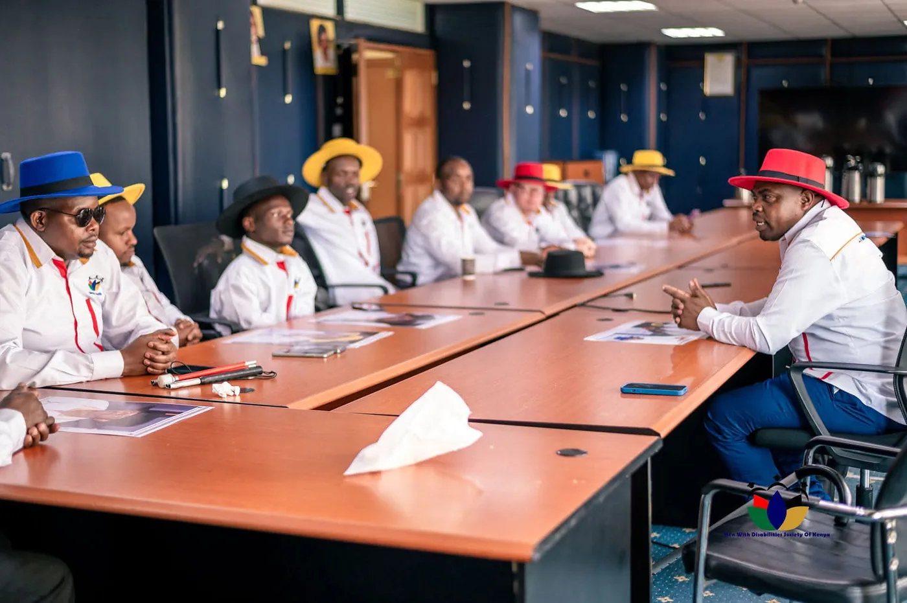
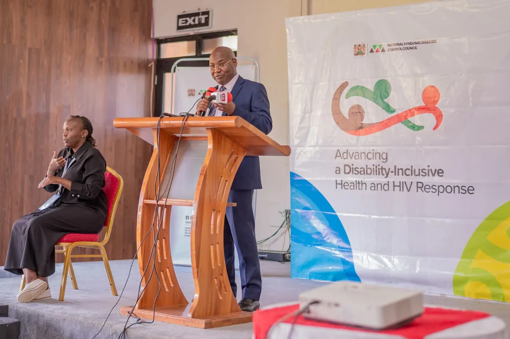
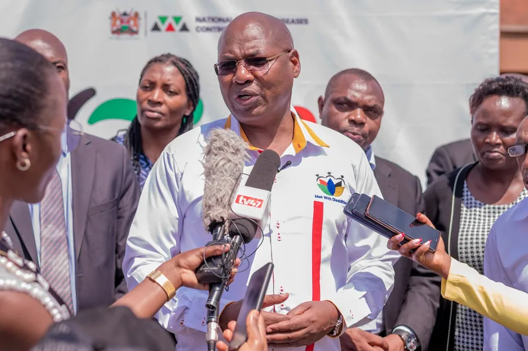
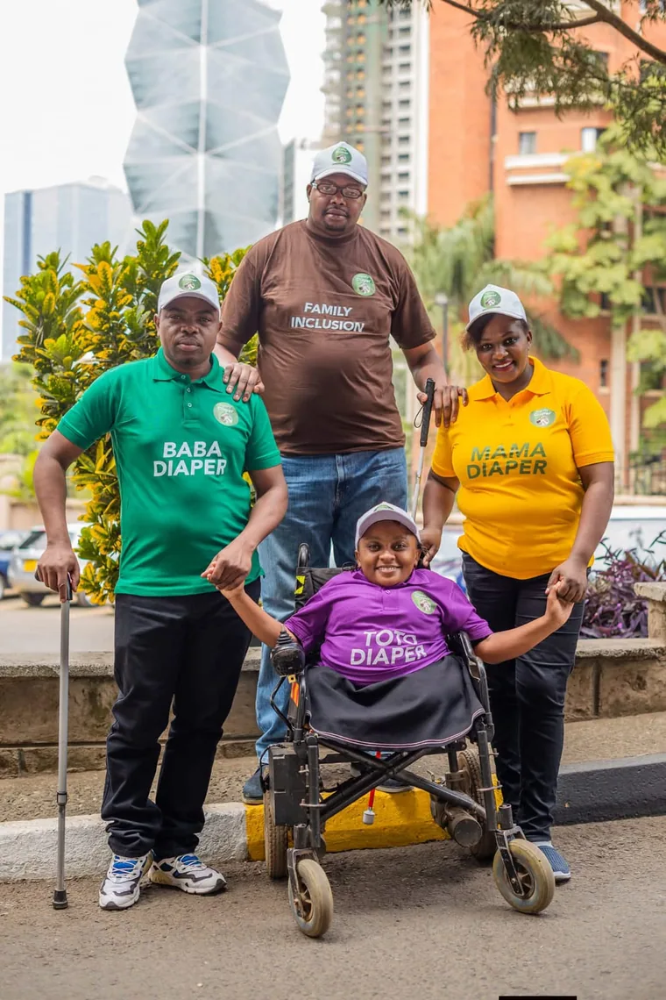
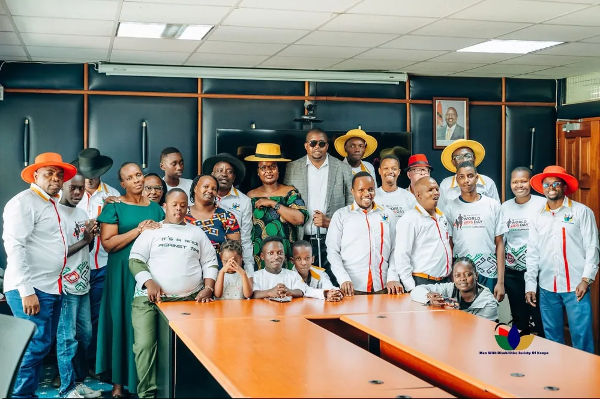
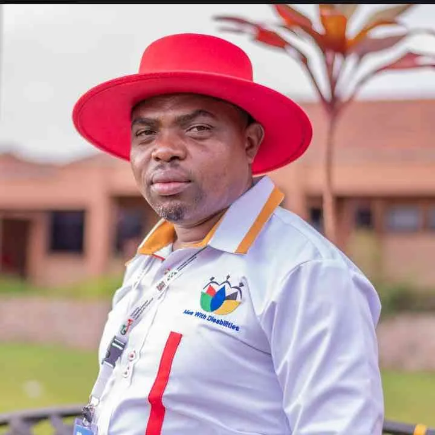

Human rights and inclusion
Protecting rights, reducing stigma, combating violence, and making public systems disability-responsive.

A national membership organization advancing rights, health, livelihoods, leadership, and dignity for boys and men with disabilities and their caregivers across Kenya.
The MDSK Guide helps visitors choose a pathway, ask a short question, or move straight to human contact. It uses reviewed site information today and can be upgraded to a reviewed AI assistant when MDSK is ready.
No account required. No sensitive disclosure needed. If the issue involves safety, GBV, SRHR, HIV, mental health, or private support, the guide points visitors to direct MDSK channels.
For urgent, medical, legal, or private safety matters, use direct support channels rather than sharing details in the guide.
MDSK advances an inclusive, enabling society where boys and men with disabilities and their caregivers can participate fully, access equal opportunities, exercise their rights, and build independent, sustainable livelihoods.
The organization connects community-based support with national advocacy across health, justice, education, employment, caregiving, accessibility, and leadership.
Trustworthy advocacy grounded in the lived experience of members.
Dignity first, with no inspiration framing and no tokenism.
Clear commitments to members, partners, caregivers, and communities.
Participation across disability, language, location, and income barriers.
Systems change through government, OPDs, CSOs, media, and private partners.
Accessible work delivered with discipline, care, and high standards.
Protecting rights, reducing stigma, combating violence, and making public systems disability-responsive.
SRHR, HIV response, mental health, referral pathways, and accessible healthcare engagement.
Equitable learning, digital skills, vocational pathways, and access to opportunity.
Entrepreneurship, financial inclusion, workplace reintegration, and sustainable livelihoods.
Leadership development, civic participation, and representation in decision-making spaces.
Coordinated action with government, OPDs, CSOs, development partners, academia, and media.
MDSK's public presence should be fast, plain, keyboard-complete, readable, and respectful of sensitive topics such as GBV, SRHR, HIV, and psychosocial wellbeing.
Key pages are structured to support KSL video summaries as soon as clips are supplied.
Plain-language content gives visitors a simpler route into the same mission.
The build is prepared for full English and Kiswahili content, not an afterthought.
Sensitive advocacy pathways include a visible exit control and minimal data collection.




The National Conference brought rights, dignity, inclusion, caregivers, health, leadership, and partner coordination into one public platform.

Chairperson, MDSK
The visual identity stays true to the hats because they are not decoration. In the available MDSK photography, the hats operate as presence, solidarity, and recognition across boardrooms, media spaces, health forums, and community events.
That is the design logic for this pass: the emblem remains intact, the hats remain meaningful, and the website treats people as civic actors rather than charity subjects.
MDSK works across public agencies, OPDs, health partners, civil society, development partners, media, and community networks.
Fund advocacy, access, caregiving support, outreach, and member-centered programs.
Bring institutional reach, technical expertise, funding, services, media access, or inclusive employment pathways.
Start a partnershipMembers, caregivers, allies, and volunteers can help widen access and make inclusion visible in everyday systems.
Contact MDSKMDSK ni shirika la kitaifa linalotetea haki, utu, afya, elimu, ajira, uongozi, na ushiriki wa wavulana na wanaume wenye ulemavu pamoja na walezi wao nchini Kenya.
Tovuti kamili itaandaliwa kwa Kiingereza na Kiswahili ili taarifa muhimu ziwafikie watu wengi zaidi.
For partnerships, membership, media, donations, or program coordination, use the direct channels below.